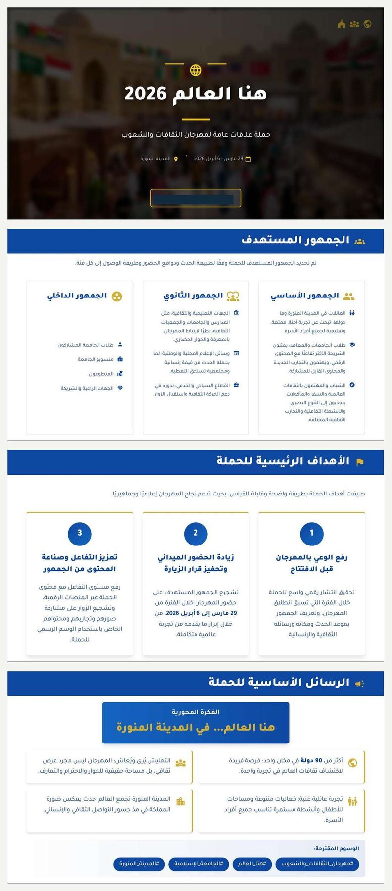
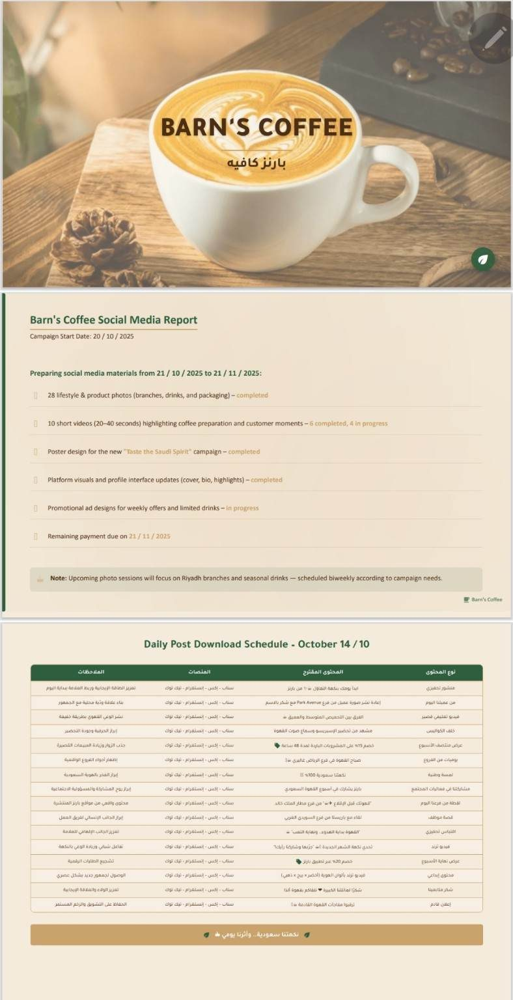
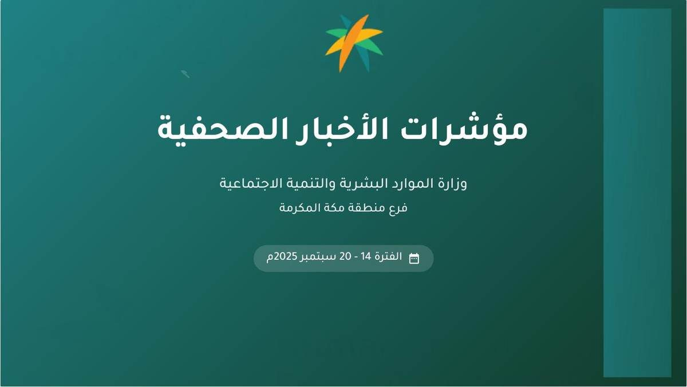

خطة محتوى — علاقات عامة — تحليل رقمي
مهرجان الثقافات والشعوب
مشروع محتوى واتصال متكامل لفعالية ثقافية جماهيرية، شمل بناء خطة المحتوى وتنظيم الرسائل ومحاور النشر، وإعداد تصور لحملة العلاقات العامة، وتطوير مواد التغطية والترويج، إلى جانب تحليل الأداء الرقمي واستخلاص الملاحظات والتوصيات. يعرض المشروع جميع هذه المكونات ضمن حالة واحدة تربط أهداف الفعالية بالجمهور والمنصات وصيغ المحتوى.
يتضمن المشروع:- خطة صناعة المحتوى الإعلامي للمهرجان.
- حملة العلاقات العامة «هنا العالم 2026».
- تحليل الأداء الرقمي والنتائج والتوصيات.
تصفح ملفات المشروع داخل الصفحة
1. خطة صناعة المحتوى الإعلامي
2. حملة العلاقات العامة «هنا العالم 2026»

حملة توعوية — تقرير استراتيجي — قياس أثر
حملة «حج صحي»
حملة توعوية صحية متكاملة تقدم رسائل الوقاية والسلامة المرتبطة بالحج في إطار اتصالي واضح وقابل للتنفيذ. شمل المشروع تحليل الموقف والجمهور، وصياغة الأهداف والرسائل، وتطوير التكتيكات الرقمية والميدانية، وإعداد الخطة الزمنية ومؤشرات قياس الأثر، ثم تنظيم النتائج في عرض توعوي وتقرير استراتيجي مترابطين.
يتضمن المشروع:- العرض التوعوي وتصميم الحملة.
- تحليل المشكلة والجمهور والأهداف والرسائل.
- التقرير الاستراتيجي المفصل والخطة الزمنية والقياس.
تصفح ملفات حملة حج صحي داخل الصفحة
2. التقرير الاستراتيجي المفصل

خطة محتوى — تقرير سوشيال ميديا — جدول نشر
Barn’s Coffee
نموذج يجمع بين متابعة إعداد مواد وسائل التواصل الاجتماعي وتنظيم خطة النشر اليومية لعلامة في قطاع المقاهي. يوضح التقرير أنواع المحتوى المطلوب إنتاجها وحالة التنفيذ، بينما يوزع الجدول المحتوى بين الصور والفيديو القصير والعروض والمنشورات التفاعلية والرسائل المرتبطة بالهوية التجارية عبر المنصات المختلفة.
يشمل النموذج:- متابعة المواد والصور والفيديوهات القصيرة.
- جدول نشر يومي متعدد المنصات.
- ملاحظات تشغيلية مرتبطة بكل نوع محتوى.

تحليل محتوى — رحلة العميل — توصيات
تحليل استراتيجية المحتوى الرقمي لـSTC
دراسة تحليلية لمحتوى العلامة على وسائل التواصل الاجتماعي، تناولت تصنيف أنواع المحتوى ووظيفة كل نوع، واختلاف استخدام المنصات، وعلاقة الرسائل بالهوية والخدمات ورحلة العميل والتحويل الرقمي. يركز النموذج على قراءة المحتوى من منظور استراتيجي واستخلاص نقاط القوة وفرص التحسين.
يتضمن التحليل:- تصنيف المحتوى البيعي والخدماتي والعاطفي والموسمي.
- تحليل وظيفة المنصات وعلاقة المحتوى بالتطبيق.
- استنتاجات وتوصيات تطويرية.
تصفح التحليل داخل الصفحة

تقرير تحليلي — مؤشرات — تنظيم بيانات
مؤشرات الأخبار الصحفية لمنطقة مكة المكرمة
تقرير بصري ينظم المواد المنشورة والمؤشرات والاتجاهات التحريرية في صيغة تساعد على القراءة السريعة واستخلاص الملاحظات الأساسية. يجمع النموذج بين تلخيص البيانات وترتيب النتائج وإخراجها ضمن صفحات تقريرية واضحة ومتسقة.
تصفح التقرير داخل الصفحة
كتابة رقمية — منشورات — ريلز
نماذج كتابة المحتوى
مجموعة مختارة من نماذج الكتابة الرقمية تشمل محتوى تعريفيًا وتوعويًا وترويجيًا، وهوكات للفيديو القصير، وسيناريوهات ريلز مبنية على المشكلة والحل والدعوة إلى الإجراء. تظهر النماذج كاملة للقراءة مع توضيح الهدف والصيغة المناسبة لكل محتوى.
تحليل STC دراسة مستقلة ولا يمثل تعاونًا رسميًا مع العلامة التجارية. أزيلت من الملفات المعروضة أسماء الطلاب والبيانات الأكاديمية والخاصة.